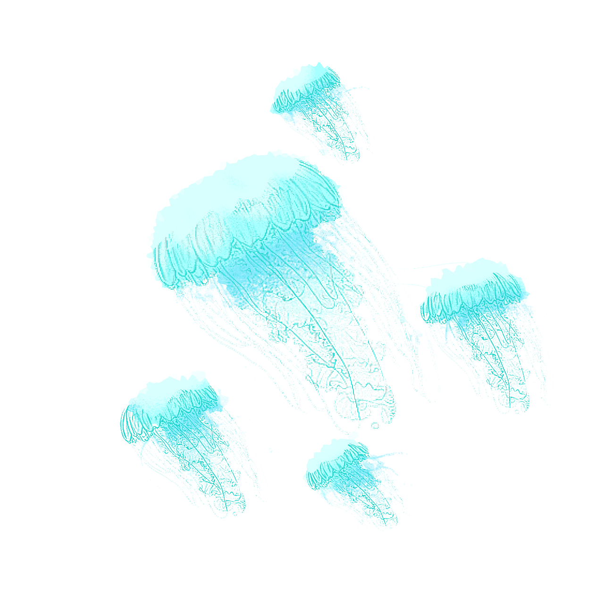
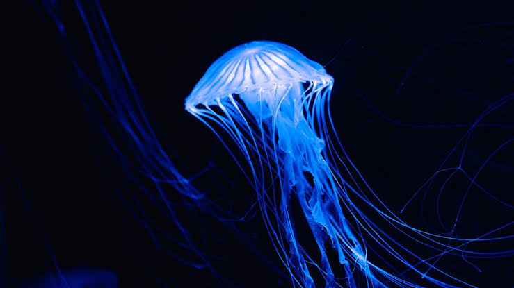
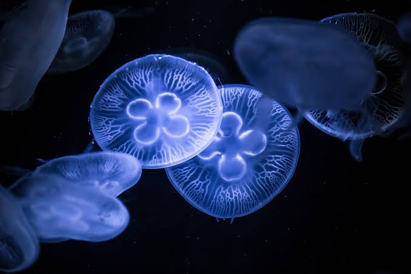
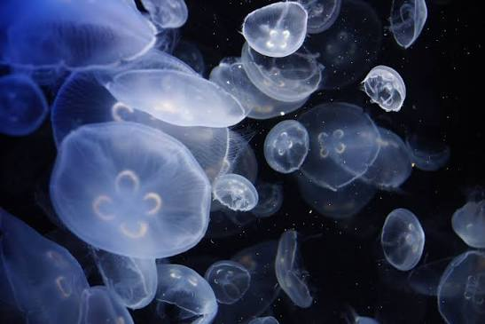
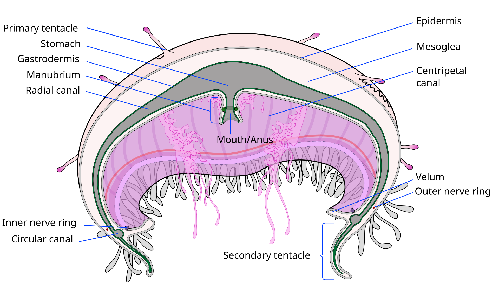

JELLYFISH
Jellyfish, also known as sea jellies or simply jellies, are the medusa-phase of certain gelatinous members of the subphylum Medusozoa, which is a major part of the phylum Cnidaria. Jellyfish are mainly free-swimming marine animals, although a few are anchored to the seabed by stalks rather than being motile. They are made of an umbrella-shaped main body made of mesoglea, known as the bell, and a collection of trailing tentacles on the underside. Via pulsating contractions, the bell can provide propulsion for locomotion through open water. The tentacles are armed with stinging cells and may be used to capture prey or to defend against predators. Jellyfish have a complex life cycle, and the medusa is normally the sexual phase, which produces planula larvae. These then disperse widely and enter a sedentary polyp phase which may include asexual budding before reaching sexual maturity.
SEE MORE...JELLYFISH GALLERY



ANATOMY
The main feature of a true jellyfish is the umbrella-shaped bell. This is a hollow structure consisting of a mass of transparent jelly-like matter known as mesoglea, which forms the hydrostatic skeleton of the animal. The mesoglea is 95% or more composed of water, and also contains collagen and other fibrous proteins, as well as wandering amebocytes that can engulf debris and bacteria. The mesoglea is bordered by the epidermis on the outside and the gastrodermis on the inside. The edge of the bell is often divided into rounded lobes known as lappets, which allow the bell to flex. In the gaps or niches between the lappets are dangling rudimentary sense organs known as rhopalia, and the margin of the bell often bears tentacles.
